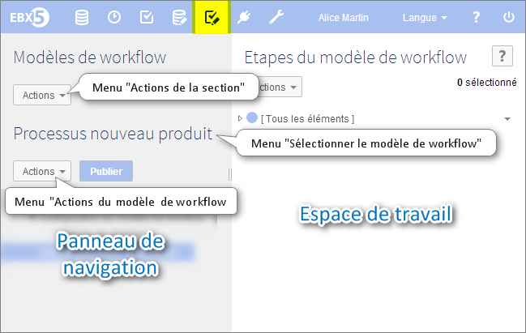

Introduction aux modèles de workflow
Le travail collaboratif est moyen efficace de produire, mettre à jour, fusionner et valider des données dans une entreprise. Cependant il n'est pas toujours facile d'obtenir que des gens de différents endroits et ayant des compétences différentes, travaillent ensemble pour remplir un objectif à une échéance commune.
En cela, vous trouverez l'outil de modélisation de workflow bien utile, car il va vous permettre de défnir des processus de gestion des données impliquant vos collaborateurs. Pour se faire, vous allez avoir besoin de :
définir des tâches réalisable par un utilisateur (voir tâche utilisateur) ou automatiquement par le système (voir tâche autonome),
spécifier les responsabilités de chacun (voir création),
d'envoyer des courriers électroniques de notification à des collègues, dont la participation est requise (voir notification),
de connaître les limites de votre modèle; ce qui peut ou ne peut pas être fait (voir limitations),
de publier votre modèle en tant que workflow pour pouvoir vous en servir (voir publication).
Un modèle de workflow définit les tâches à réaliser et les responsabilités impliquées. Il peut ensuite être publié en tant que publication de workflow. Il s'agit d'une succession de deux types de tâches : tâches autonomes et tâches utilisateurs, avec la possibilité d'ajouter des fourches conditionnelles entre les tâches.
Pour trouver le sens d'un mot, vous pouvez le rechercher dans notre glossaire.
Contenu de la section
Vue d'ensemble d'un modèle de workflow
Modalités d'accès dans l'interface

Concepts et outils associés
Tâche autonome | Aucun utilisateur n'est impliqué dans ce type de tâche. Cela peut être, par exemple, une fusion automatique, la création d'une image d'un espace de données, etc. |
Tâche utilisateur | Cela implique au moins un utilisateur et éventuellement plusieurs, qui doivent effectuer des bons de travail. |
Bon de travail | Tâche unitaire réalisée par l'utilisateur, auquel elle a été allouée, et dont l'exécution permet au workflow de progresser. |
Fourche conditionnelle/Condition | Elle décide à partir du résultat des tâches précédentes, quelle route doit être prise par un workflow. Cet embranchement comprends deux dérivations. Par exemple, quelqu'un peut continuer un workflow normalement, tandis que quelqu'un d'autre retourne à une tâche précédente; ou il peut y avoir deux routes différentes en parallèle. |
Contexte des données | Il s'agit d'une variable hébergeant temporairement des données entrée/sortie liées à l'exécution d'un workflow. Son but est de faciliter le transfert d'informations clés d'une étape à l'autre (par exemple, le nom d'un espace de données créé à l'étape 1 et étant réutilisé à l'étape 2 dans un autre but). |
 Sommaire du guide utilisateur
Sommaire du guide utilisateur